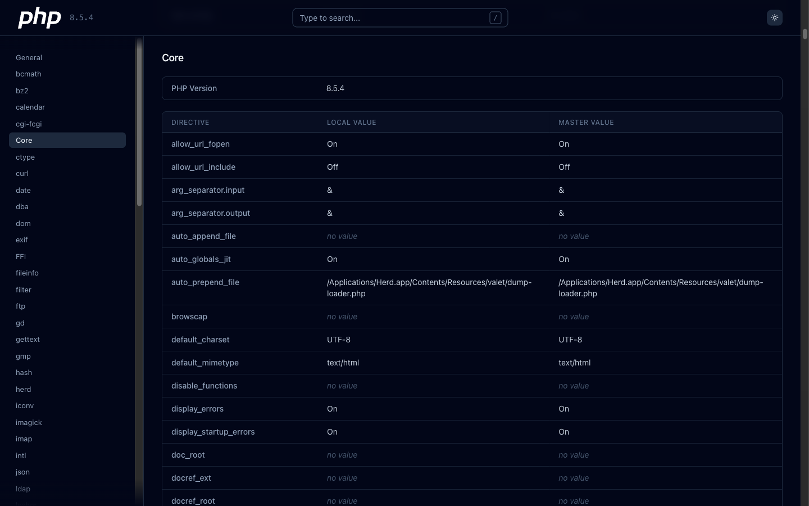
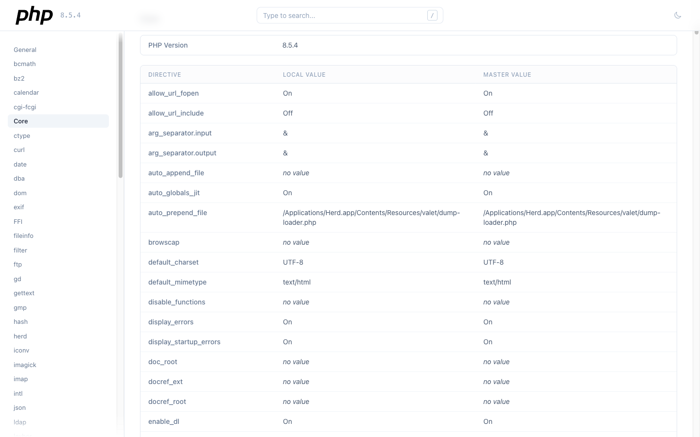

Parse, query, and display your PHP configuration with a clean API and a modern, searchable interface. Drop-in replacement for the default phpinfo() page.


A beautiful browser UI and a powerful programmatic API. Same package.
One line of code gives you a searchable, responsive, dark-mode-ready interface. Sidebar navigation, keyboard shortcuts, click-to-copy values. Zero external requests — everything is self-contained.
Structured data model built on Laravel Collections. Look up modules, configs, directives — with local and master values. Parse saved phpinfo output from any source.
Everything you need to inspect PHP configuration, nothing you don't.
Filter across all modules and configs as you type. Press / to focus.
Follows system preference with a manual toggle. Persists your choice across sessions.
Hover any config value to reveal a copy button. Works on HTTP and HTTPS.
Every module, group, and config has a unique URL hash. Link directly to any directive.
All CSS and JS are inlined. No CDN requests, no external dependencies. Works air-gapped.
Parses both HTML (web) and plaintext (CLI) phpinfo() output. Auto-detects the format.
Install with Composer, call one function. That's it.
No install required. This downloads a small PHP script, runs it locally, and opens a pretty phpinfo page right in your browser. Nothing leaves your machine.
On Windows, use curl.exe instead of curl in PowerShell